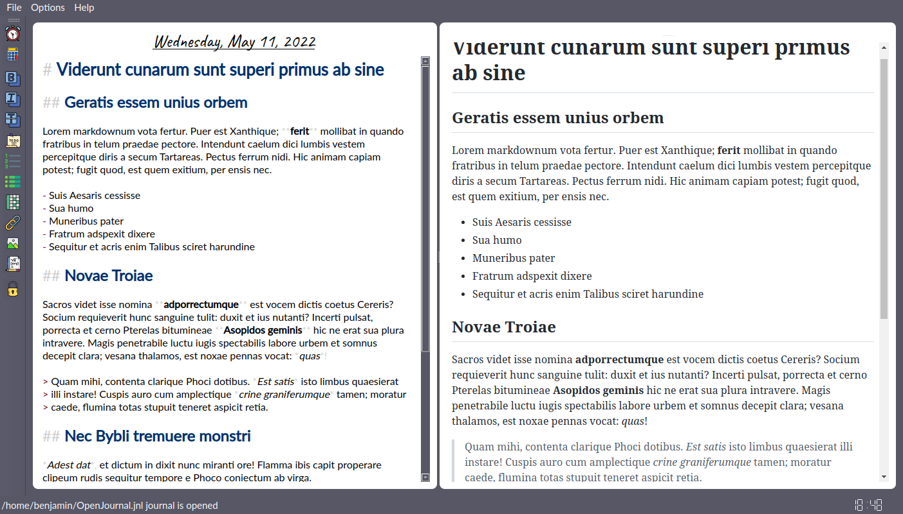
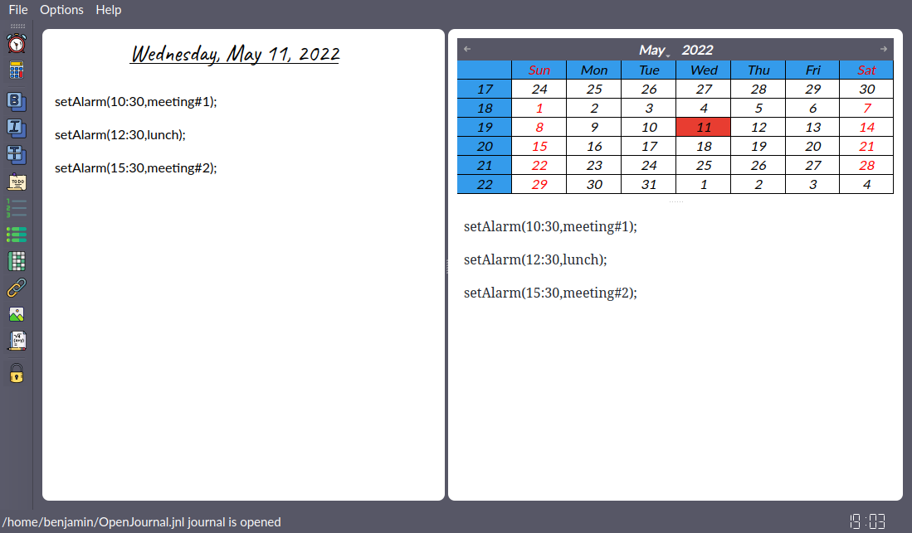
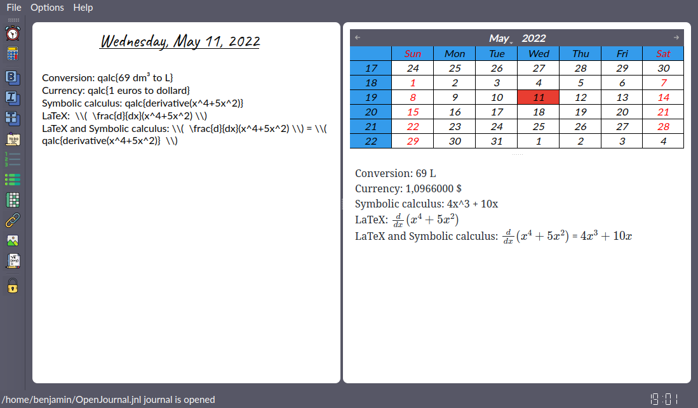

For who?
- For anyone: 😊 keeping a daily diary can help you self-reflect and relieve stress, keeping a trace of situations and feelings.
- For writers: 🖊️ keeping a writer's journal is a good way to improve writing abilities. Writers can record plots outlines, observations, descriptions, details, dialog lines, etc...
- For professionals: 🤓 writing down tasks, setting alarms and performing calculations in one environement can help you organize your day better.
Full Markdown support
Smart Markdown editor | Full Markdown rendering

Alerts
Set alarms to trigger visual and sonore alerts

Smart calculator
Calculator | Unit and currency conversion | LaTeX

Storage
- 💻 Local storage
- 🏢 Partaged local storage using MariaDB server
- ☁️ Cloud storage